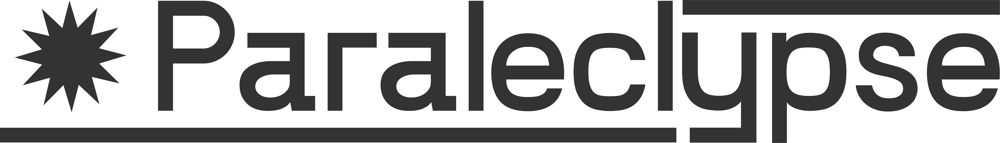
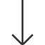

Paraleclypse est une société de production audiovisuel. Nous produisons des oeuvres de fiction et de documentaire.
scroll

Paraleclypse a été créé en 2020 par Tom Martin et Léo Prudhomme. Respectivement réalisateur et artiste 3D, l'idée était d'avoir une structure permettant de signer collectivement un premier clip vidéo. Depuis les ambitions ont évoluées et le projet a changé. Paraleclypse est devenue une société de production axée autour de la création de fiction et particulièrement de court-métrage.
Notre objectif est d'accompagner les artistes pour lesquels nous croyons dans le développement de leur projet. De l'expertise technique et artistique, en passant par l'évaluation des coûts, la production et la diffusion, nous travaillons collectivement pour donner vie à de beaux projets. Avant tout, nous souhaitons racconter une histoire, transmettre une émotion, et faire vivre une expérience.